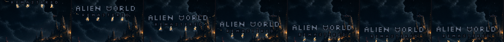
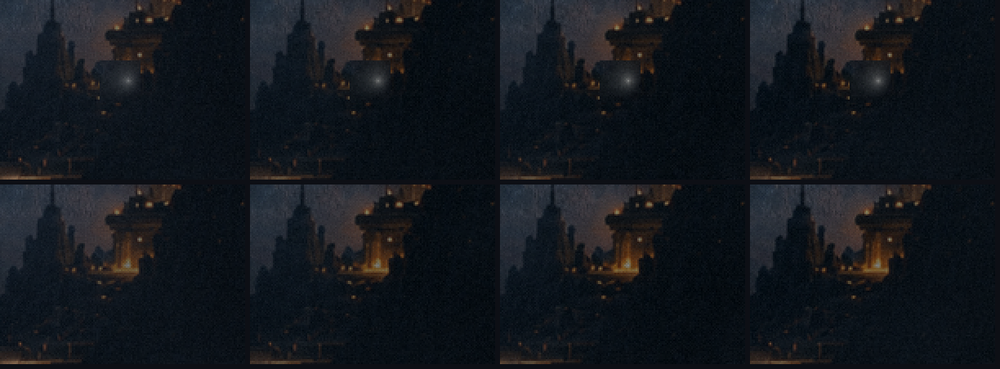
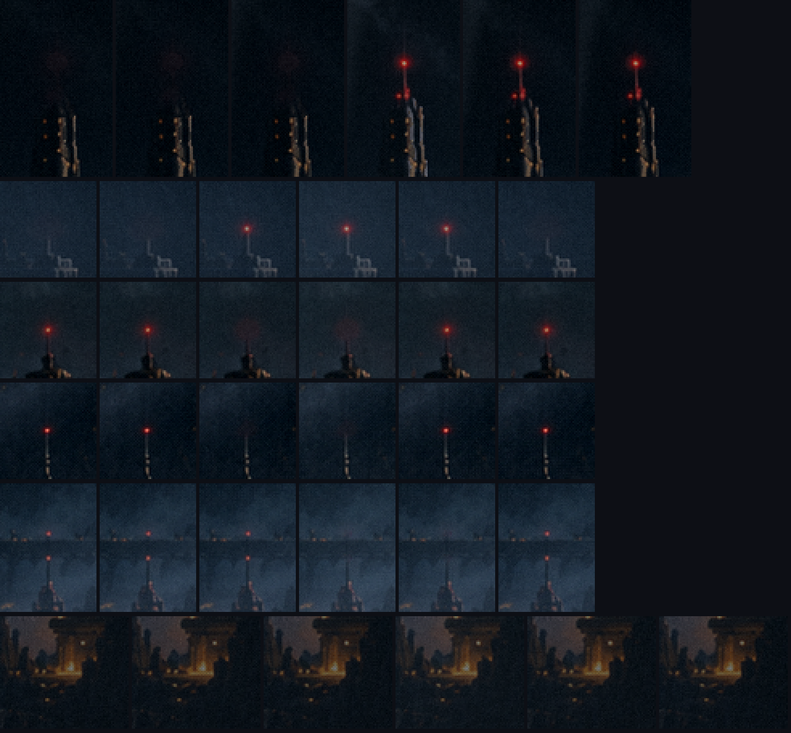
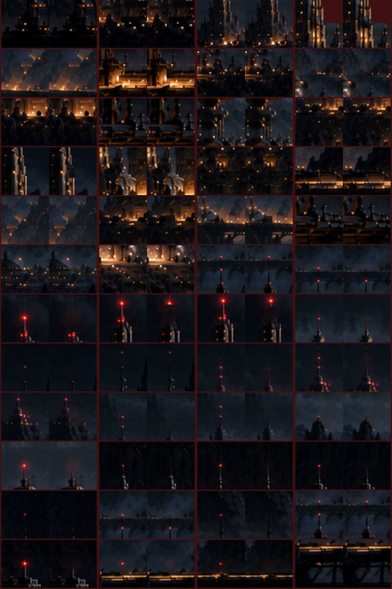

Menu refeito · rodada 9 · a queda controlada
19/10/2026. ← rodada 8 · Aprovados: os relâmpagos (alguns sem raio, para dar distância), os holofotes, a nave, e o feixe que passa perto do Leviatã sem iluminá-lo. O seu pedido: o letreiro caindo mais devagar, como se estivesse sendo controlado, com os estabilizadores iguais.
O menu
A queda
| Rodada 8 | Agora | |
|---|---|---|
| velocidade ao entrar | ~99 px de jogo/s | ~57 px de jogo/s |
| a queima até parar | 2,2 s | 3,8 s, freando três vezes mais suave |
| os jatos | A mesma pluma: a força de cada bocal segue a mesma curva da rodada 8, só esticada no tempo. Os sopros laterais e o ajuste final ficaram idênticos. | |
Ele entra meio segundo antes (3,0 s), para a abertura não esticar demais.

| 0 – 1,2 s | O véu sai. |
| ~2 s | O Leviatã sai da nuvem. |
| 2,4 s | O primeiro relâmpago, com raio. |
| 3,0 – 6,8 s | A descida controlada, freando o caminho todo; os laterais corrigem a deriva. |
| 6,8 – 7,6 s | Ele passa um pouquinho do ponto, um sopro o devolve, e ele firma. |
| 7,2 s | A lista desce em formação (pousa ~8,6 s: o menu aceita teclas). |
| 8,8 s | O neon pega letra por letra; depois o REMASTERED; e por último os olhos (~10,4 s). |
| 12,2 · 17 · 21 s | Relâmpagos: com raio, sem raio, com raio. |
O artefato da luz que pisca corrigido
O ponto que você marcou era um "farol" falso: um pixel avermelhado dentro de uma porta acesa. Quando ele piscava, o halo vermelho do farol levava junto a porta âmbar inteira, porque o âmbar também passava no teste de "vermelho". O resultado era um borrão cinza com um ponto branco no meio.
As correções:
- Ponto vermelho cercado de luz âmbar é parte da janela, não farol. A porta fica acesa.
- O halo de um farol agora só leva o vermelho dele, nunca o âmbar das paredes em volta.

A primeira versão da correção errou a mão (os faróis que você marcou, 1 a 6). Ela tratava como janela qualquer ponto vermelho a até 8 px de uma luz âmbar. Isso pegou os faróis no alto de torres com janelas acesas logo abaixo, e eles pararam de piscar. No 1, o de cima parou e o de baixo continuou. Agora a regra mede o entorno de cada ponto:
- Farol de verdade fica contra o escuro: no máximo 4% de luz quente em volta. Os seus cinco voltaram a piscar devagar, como antes.
- Os pontos vermelhos dentro de luz (a porta, e a escada de lava da cidadela, com 7–20% de luz em volta) ficam fixos. Apagados, eles deixavam manchas no brilho.
- Os faróis da mesma torre piscam juntos, como luz de sinalização de verdade, então o de cima e os de baixo do 1 não ficam mais em descompasso.
- A luz de baixo de cada torre pisca com a de cima, mesmo quando ela é mais alaranjada (a do 6 ficava fixa e era lida como janela). A regra vale só para luz de torre, isolada contra o escuro: uma lâmpada no meio da fileira acesa de um deque continua acesa.

Depois disso conferi todas as 48 luzes que piscam no menu (24 janelas e 24 luzes de farol), cada uma acesa e apagada, recortada exatamente como o menu recorta:

Próximo passo sua vez
Se a queda ficou como você queria, o desenho do menu está completo. Aí eu junto todas as decisões das nove rodadas num documento de design, para você revisar antes de eu planejar a implementação no jogo.